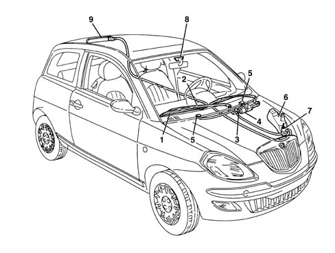
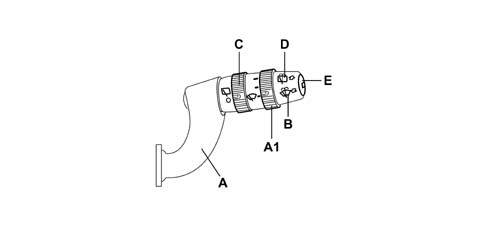
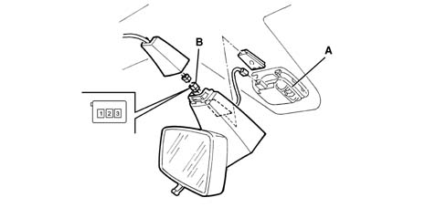
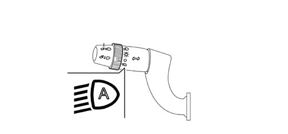

Introduction - SCREEN WASHERS AND HEADLAMP WASH/WIPE
- Path
- Descriptions > 50 AUXILIARY UNITS > 5050 SCREEN WASHERS AND HEADLAMP WASH/WIPE > Introduction - SCREEN WASHERS AND HEADLAMP WASH/WIPE
- Kind
- system description
- Applies to
- all engines; all production periods
- Interactive page
- https://sloeber94.github.io/elrnDB-lYpsln/en/#/2429855
Applies to: all engines; all production periods
INTRODUCTION
The system fitted on the vehicle is designed to clean and wash the front windscreen and the rearscreen. There may be an optional system for washing the front light clusters using the windscreen washer fluid under pressure.

1 - Windscreen wiper blade 2 - Wiper arm 3 - Windscreen wiper mechanism 4 - Windscreen wiper motor 5 - Windscreen washer jets 6 - Reservoir 7 - Windscreen/rearscreen washer pump 8 - Rain sensor 9 - Rear wiper arm/blade
Applies to: all engines; all production periods
FRONT WINDSCREEN WASH/WIPE
The front windscreen wash/wipe assembly has the task of cleaning and washing the front windscreen.
There are two types, according to the trim level of the vehicle, standard or de-luxe, which differ considerably through the availability as optional on the de-luxe version of an electronic device for detecting the presence of drops of water on the windscreen (rain sensor).
New features on the windscreen wash/wipe system are essentially as follows:
- 'smart washing' activation strategy
- the (optional) presence of a rain sensor
The windscreen wiper mechanism has been developed to ensure optimum cleaning of the area covered by the wipers and to allow the blades to always work in the correct conditions (wiping angle, pressure on the windscreen).
Thanks to the control electronics and according to the position of the right steering column switch unit lever, the system is capable of managing the operation of the direct current type windscreen wiper motor with two windings, i.e. two rotation speeds:
The rain sensor allows the automatic operation of the system in weather conditions where the driver would be continuously and repeatedly having to operate the system.
The 'smart' washing strategy guaranteed by the control electronics allows the elimination of the residual traces of windscreen washer fluid which are normally left at the end of a traditional windscreen wash/wipe system cycle.
Applies to: all engines; all production periods
WINDSCREEN WASHER/REARSCREEN WASHER ELECTRIC PUMP
The electric windscreen washer pump is operated via the right steering column switch unit lever.
By moving the right steering column switch unit lever towards the driver (unstable position) the two-way pump is electrically supplied in order to be able to supply the front jets; conversely, pushing the lever towards the dashboard causes the rotation of the pump in the opposite direction and the liquid to come out towards the rearscreen washer pipe with the supply of the rear jets.
Applies to: all engines; all production periods
REARSCREEN WASH/WIPE
This device has the task of cleaning the rearscreen effectively. It consists of a single motor with a 12 V supply which can operate at voltages between 9 and 16 V; it has a twin metallic type overload cut-out.
The wiper is constructed from a single wiper element made of a plastic arm and the linkage is internal. The jet is incorporated in the engine dust cover.
Applies to: all engines; all production periods
REARSCREEN WIPER FUNCTION
The electronic moduel controls the intermittent operation of the rearscreen wiper motor in way which is similar to that described for the windscreen wiper.
The rearscreen wiper is activated in synchronization with the operation of the windscreen wiper, but at half the frequency (one impulse sent to the rearscreen wiper for every two impulses sent to the windscreen wiper).
Applies to: all engines; all production periods
AUTOMATIC FUNCTION
In addition to the manual operation described previously, the system is automatically activated via the body computer which sends information to the steering column switch unit electronic module.
When, with the windscreen wiper activated in either manual or automatic mode (rain sensor), reverse gear is engaged, the dashboard control unit receives the signal from the reverse switch and transmits it to the body computer which sends it to the steering column switch unit electronic module which activates the rearscreen wiper motor.
Applies to: all engines; all production periods
HEADLAMP WASH/WIPE
The headlamp wash/wipe system is designed to clean the surface of the front light clusters and keep them in excellent condition.
The headlamp washer system consists of:
- a special electric pump on the windscreen washer fluid reservoir;
- two devices equipped with spray jets, secured to the bumper by bolts;
- three connecting pipes between the pump and the devices inside the bumper;
Applies to: all engines; all production periods
OPERATING CYCLE
This function is activated when the following conditions occur:
- ignition switched ON
- dipped/main beam headlamps on
- headlamp washer control on steering column switch unit lever activated.
Activation takes place through the special windscreen washer control on the steering column switch unit which identifies the action of washing the windscreen. The Body Computer Connector (NBC) acquires the windscreen washer activation time and increases a counter. When the counter reaches 5, the NBC operates the steering column switch unit timer circuit which supplies the headlamp washer pump relay for a period of time equal to the cycle described above. In practice, every 5 times the windscreen washer is switched on, an automatic headlamp washer cycle is initiated.
Being controlled by the pump supply pressure, the operation of the jets is characterized by an intervention frequency equal to that of the actual pump.
Applies to: all engines; all production periods
RIGHT STEERING WHEEL STALK
This includes the front and rear wiper controls. All the commands are activated via the lever or the ring nuts on the actual lever. There is also a button on the end of the lever which controls the trip computer functions 5560 INSTRUMENT PANEL.

A - Windscreen wiper operation; A1 - Windscreen wiper intermittent adjustment / Rain sensor sensitivity; B - Windscreen washer operation; C - Rearscreen wiper operation; D - Rearscreen washer operation; E - Trip computer control button
Applies to: all engines; all production periods
WINDSCREEN WIPER OPERATION
The operation is achieved by moving the lever on the steering wheel, there are 5 different positions:
Pos. 1 = Single stroke (UNSTABLE): ANTI-CLOCKWISE DIRECTION;
Pos. 2 = No circuit switched on (STABLE): POS POSITION;
Pos. 3 = Intermittent / Automatic (STABLE): CLOCKWISE DIRECTION;
Pos. 4 = 1ST SPEED continuous (STABLE): CLOCKWISE DIRECTION;
Pos. 5 = 2ND SPEED continuous (STABLE): CLOCKWISE DIRECTION;
Applies to: all engines; all production periods
WINDSCREEN WIPER INTERMITTENT ADJUSTMENT / RAIN SENSOR SENSITIVITY
This control is at the end of the lever and is operated by rotating a special ring nut in a clockwise direction in 4 stable positions corresponding to:
- BASIC TRIM LEVEL: from Pos. 1 to Pos. 4 = Increasing wiping frequency;
- DE-LUXE TRIM LEVEL: from Pos. 1 to Pos. 4 = Increasing rain sensor sensitivity;
Applies to: all engines; all production periods
ELECTRONIC MODULE (INCORPORATED IN STEERING COLUMN SWITCH UNIT)
This is the electronic control unit which controls the operation of the electric windscreen and rearscreen wiper motors and the smart washing functions.
In particular, it controls the operation of the:
- Windscreen wiper: sweep rate
- Rear wiper: sweep rate and controlled by reverse;
- Windscreen washer function: smart' washing';
- Rearscreen washer function:'Smart' washing ;
- Rain sensor (if present)
Applies to: all engines; all production periods
REAR WIPER CONTROL
This control is on the lever and is activated by turning a special ring nut.
The control has 2 STABLE positions and is turned in a clockwise direction:
- Pos. 1 = No circuit switched on;
- Pos. 2 = Rearscreen wiper activated;
Applies to: all engines; all production periods
REAR WASHER CONTROL
It is operated by pushing the lever towards the dashboard, the operation is UNSTABLE as a result of which when the lever is released it returns to the rest position.
The activation of the control involves the simultaneous operation of the rearscreen wiper with the 'smart washing' function (windscreen washer function).
Applies to: all engines; all production periods
RAIN SENSOR
The rain sensor, located in the windscreen glass (available on the de-luxe version) is incorporated with the dusk sensor and is controlled by the steering column switch unit electronic control unit.
Applies to: all engines; all production periods
LOCATION
The rain sensor, integral with the dusk sensor, is described below. The sensor is located on the windscreen immediately below the rear view mirror.

A - Rain/dusk sensor B - Connection: CONNECTOR PINOUT 1- Supply controlled by ignition 2 - Earth 3 - A-BUS serial line
Applies to: all engines; all production periods
COMPOSITION OF THE SYSTEM
The device, which operates on infrared wavelengths based on the principle of the refraction of a light beam through glass, allows the automatic adjustment of the number of windscreen wiper arm strokes in a manner proportional to the intensity of the rain.
The device is capable of measuring the dimensions, the number and the quantity of drops of rain on the window; when refraction mode changes, the sensor reacts by generating electrical pulses that are processed and sent via the serial network. The wiper control unit (built into the Stalk control unit) controls the wiper according to the type of speed set by the speed sensor. The sensor communicates with the stalk unit and the Body Computer via an A-BUS serial interface.
The rain sensors consists of two sets of four infrared LEDs, arranged in a circle, and a receiver element in the centre of the LEDs.
The sensor, housed behind the rear view mirror, is kept in contact with the windscreen by a spring which acts on a protective cover behind the actual mirror.
The LEDs and the receiver, immersed in a polymer, are connected to the windscreen wiper control unit by means of wiring with a connector; in this way the sensor can be easily removed after having removed the cover and disconnected the connector.
The device is activated by moving the lever on the steering column switch unit from the OFF position or 1st speed to the intermittent/automatic position. The wiper moves through a confirmation sweep to inform the user that it has switched to automatic mode.
The sensitivity with which 'dynamic disturbances' (drops of rain) are detected can be altered via the ring nut on the actual lever with four settings. The wiper moves through one confirmation sweep whenever the sensitivity is changed.
If the stalk remains in auto position and the panel is turned off, no automatic function is activated at the next key on. In this case, to return to automatic mode, move the wiper stalk to any position or turn the sensitivity wheel on the stalk. This occurs in the presence of a system fault and also under normal operating conditions.
Applies to: all engines; all production periods
operation
If the right lever is placed in the intermittent/A1 automatic position, the rain sensor is activated.
This adjusts the frequency of the windscreen wiper strokes according to the quantity of water on the windscreen. The frequency can vary continuously from 0 (no stroke - glass dry) up to wiping at continuous speed (heavy rain).
The activation of the RAIN SENSOR operates a windscreen wiper stroke as feedback.
If the ignition is switched off leaving the lever in the AUTOMATIC position, the RAIN SENSOR places the windscreen wiper system on STAND-BY. When the ignition is later switched on, no wiping cycle is carried out even if a rain sensor is fitted.
To restore the AUTOMATIC operation of the system, carry out any of the following manoeuvres on the steering column switch unit wiper control lever:
- moving the lever from the AUTOMATIC position to any other position and returning it to the AUTOMATIC position;
- altering the sensitivity by turning the RING NUT (increasing or decreasing it).
When restoring the operation of the RAIN SENSOR through one of the movements described above, the windscreen wiper carries out a stroke, even if the glass is dry, to signal the reactivation to the user.
If the signal from the rain sensor has not been received by the steering column switch unit (as a result of breaks in the wiring or malfunctions with the sensor itself), the operation of the windscreen wiper via the right lever in an intermittent/automatic position does not take place according to the intermittent mode described.
Applies to: all engines; all production periods
RECOVERY FUNCTION
If the RAIN SENSOR is not working properly, the recovery function is implemented and the operation of the windscreen wiper is managed according to the conventional methods described previously.
The electronic module establishes that the rain sensor is not working correctly if it does not receive significant information from the actual sensor for a period of T = 3 secs or if it receives a fault status signal from the sensor via the A-BUS network.
The sensor also sends a fault message to the Body Computer. The Body Computer activates a fault signal on the control panel.
If the fault is intermittent and the system is reset, the fault signal disappears from the NQS but automatic mode is not reset. To activate it again, simply move the wiper stalk to any position and restore to Auto or turn the sensor sensitivity wheel.
Applies to: all engines; all production periods
OPERATION
The side lights and dipped headlamps are activated automatically, via the dusk sensor, if the AUTO function is set on the steering column switch unit.

Applies to: all engines; all production periods
OPERATION
The dusk sensor is an infrared device that operates at different levels of sensitivity. When the dusk sensor is activated, a message appears on the control panel display that indicates a preset sensitivity level (from 1 to 3). This intensity may be adjusted using the 'Mode +' and 'Mode -' keys.
At Key ON, the dusk sensor communicates the information relating to the outside light conditions to the Body Computer via the A-BUS serial network, sending it periodically once per second.
When the driver activates the dusk sensor placing, the Body Computer receives the 'AUTO' command and transmits it to the instrument panel. This activates a message for sensor sensitivity levels selection and restores the last selected value.
Sensor sensitivity may also be altered after activation with the vehicle in motion or at a standstill by searching for the sensor sensitivity option in the instrument panel menu.
The Body Computer uses the message transmitted by the dusk sensor to activate/deactivate the side lights and the dipped headlamps. The side lights and dipped beams come on simultaneously while the side lights go off 10 seconds after the dipped beams have gone off.
Applies to: all engines; all production periods
RECOVERY FUNCTION
If the following faults are present:
- fault signal for the sensor
- the Body Computer no longer receives information from the dusk sensor via the A-BUS line,
The Body Computer implements the following strategies:
- If the steering column switch unit is in the AUTO position and the side lights are off, the NBC supplies the fault signal to the NQS and switches the side lights and the dipped headlamps on at the same time.
- If the steering column switch unit is in the AUTO position and the side lights are on, the NBC supplies the fault signal to the control panel and the side lights and the dipped headlamps come on.
- If the steering column switch unit is not in the AUTO position, it supplies the fault signal to the instrument panel and does not implement any recovery action for the dusk sensor.